目次
1. インストール・初回起動・ログイン
- 公式案内ページで版、公開日、SHA-256を確認し、インストーラーを取得します。
Get-FileHash <ファイルパス> -Algorithm SHA256で公開値と一致することを確認します。- インストーラーを起動し、通常は利用者単位でインストールします。
- Y'sRouteを起動します。初回起動時にローカルDBが自動作成されます。
ログインしなくても主要機能を利用できます。ログインする場合は左下の人型アイコンからGoogleでログインを選びます。
2. 共通画面とゲーム
 1
2
3
4
5
1
2
3
4
5
| 番号 | 場所・ボタン | できること |
|---|---|---|
| 1 | ゲーム欄の＋ | 新しいゲームを追加します。 |
| 2 | 鉛筆／ごみ箱／全画面 | 選択中ゲームの編集、削除、ゲーム一覧の展開を行います。 |
| 3 | Todo／チャート／ゲームDB | 選択中ゲーム内の機能を切り替えます。 |
| 4 | 歯車 | 現在の機能の管理画面を開きます。 |
| 5 | 各一覧の＋ | Todo、チャート、DB、レコードなどを追加します。 |
左サイドバー上部
| アイコン | 説明 |
|---|---|
| Todo／Chart／DB | 現在表示しているゲーム機能を示します。 |
| 最近使った項目 | 最近開いたゲーム、Todo、チャートと作業ログを表示します。 |
左下メニュー
左下には、案内文書とアカウント、アプリ設定へ移動する4つのメニューがあります。番号は上から順です。
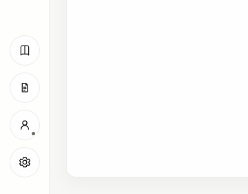
1 2 3 4| 番号 | メニュー | 押した後にできること |
|---|---|---|
| 1 | ユーザーマニュアル（本） | 既定のWebブラウザーで、このユーザーマニュアルを開きます。操作中にアプリへ戻ってもマニュアルはブラウザー側に残ります。 |
| 2 | 公開文書（文書） | 既定のWebブラウザーで公式案内ページを開きます。そこからプライバシーポリシー、利用規約、第三者ライセンスを確認できます。 |
| 3 | ログイン／ユーザー情報（人） | 未ログイン時はGoogleログインと利用状況、ログイン後は表示名・アイコンの変更、ログアウト、アカウント削除を行えます。詳しくは次項を参照してください。 |
| 4 | 設定（歯車） | 外観、データ、Todo、ショートカット、連携、OBSの設定を開きます。各タブは「8. 設定・OBS・データ」で説明します。 |
ログイン／ユーザー情報メニュー
ログインは任意です。ゲーム、Todo、チャート、ゲームDBなどのローカル機能は、未ログインのまま利用できます。
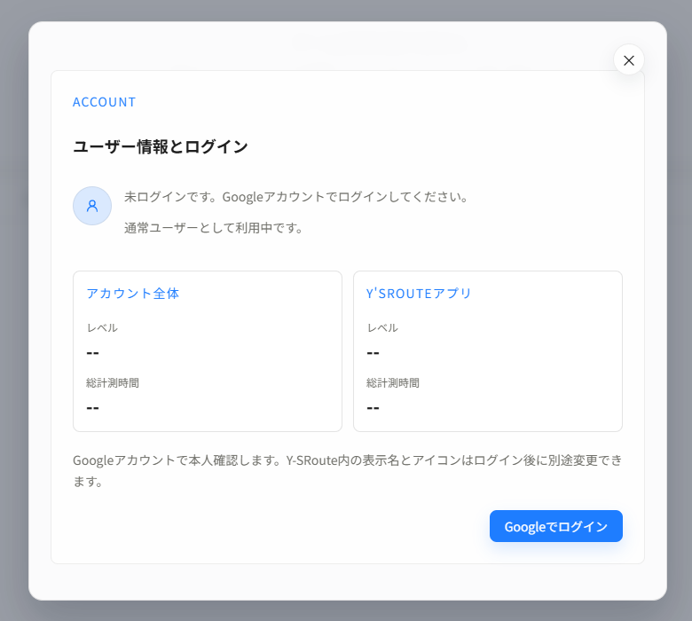
1 2 3| 番号 | 場所・ボタン | 説明 |
|---|---|---|
| 1 | ログイン状態 | 現在のログイン状態を表示します。未ログイン時は通常ユーザーとして利用中であることが表示されます。 |
| 2 | アカウント全体／Y'sRouteアプリ | ログイン後、アカウント全体とY'sRoute内それぞれのレベル、総計測時間を確認できます。 |
| 3 | Googleでログイン | 既定のWebブラウザーでGoogleの本人確認を行います。認証完了後にY'sRouteへ戻ります。 |
ログイン後にできること
- プロフィール: Y'sRoute内で使う表示名とアカウントアイコンを変更できます。
- 登録情報: Googleメールアドレス、ログイン方式、登録日を確認できます。GoogleメールアドレスはY'sRoute側では変更できません。
- ログアウト: クラウド連携を終了します。端末内のゲーム、Todo、チャート、ゲームDBは削除されません。
- アカウント削除: Googleで再認証し、確認文字列を入力してクラウド上のアカウントを削除します。削除しても端末内のローカルデータは残ります。
アカウント削除は取り消せません。ローカルデータも削除したい場合は、必要なバックアップを確認したうえでアンインストール後に利用者データを手動削除してください。
3. Todo画面
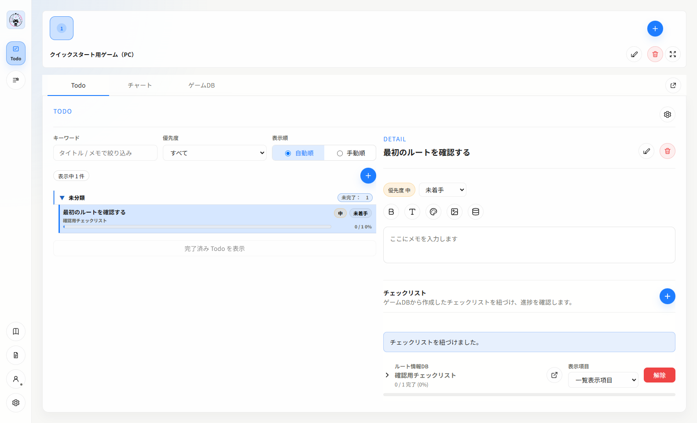
1 2 3 4 5| 番号 | 場所・ボタン | 説明 |
|---|---|---|
| 1 | キーワード | タイトルとメモで絞り込みます。 |
| 1 | 優先度 | 低・中・高、またはすべてを表示します。 |
| 1 | 自動順／手動順 | 状態・優先度による自動整列、またはドラッグ順を切り替えます。 |
| 2 | Todo一覧の＋ | タイトル、親Todo、状態、優先度、セクションを指定して追加します。 |
| － | 完了済みTodoを表示 | 完了済みの項目を展開します。 |
| 3 | 詳細の鉛筆／ごみ箱 | 選択中Todoを編集／削除します。 |
| － | 状態プルダウン | 未着手、進行中、完了などへ変更します。 |
| 4 | B／T／パレット／画像 | メモの太字、文字サイズ、文字色、画像挿入を行います。 |
| 4 | DBアイコン | ゲームDBレコードを参照チップとしてメモへ挿入します。 |
| 5 | チェックリスト欄の＋ | ゲームDBのチェックリストをTodoへ紐づけます。 |
4. チャート画面
 1
2
3
4
1
2
3
4
| 番号／ボタン | 説明 |
|---|---|
| 1 歯車／鉛筆 | セクション・CSV・履歴管理、またはチャート編集を開きます。 |
| 2 チャート選択 | 実行・編集するチャートを切り替えます。＋で新規作成します。 |
| 3 比較対象 | 自己ベスト、前回、平均、目標、ベスト区間合計を切り替えます。 |
| 4 タイマー | 一時停止／再開と中止を行います。 |
| 記録 | 現在手順を完了として記録し、次の手順へ進みます。 |
| 練習開始／終了ステップ | チャート全体ではなく指定区間だけを練習します。 |
| 現在セクション／周辺ステップ | 実行中に表示する手順範囲を切り替えます。 |
5. ゲームDB画面
ゲームDBは、攻略情報、装備、収集物、ルート候補などを自由な項目で管理する機能です。左から「DB」「レコード一覧」「レコード編集」の3列で操作します。
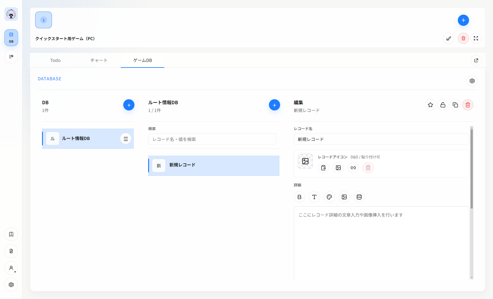
1 2 3 4 5 6 7| 番号 | ボタン | 説明 |
|---|---|---|
| 1 | DB欄の＋ | DB名、説明、アイコン、レベル設定を指定してDBを追加します。 |
| 2 | DBメニュー | DB設定とチェックリスト管理を開きます。DB設定では項目の型、必須、コピー用、一覧表示を設定します。 |
| 3 | レコード欄の＋ | 選択中DBへレコードを追加します。 |
| 4 | お気に入り／ロック／複製／削除 | 選択中レコードの状態と複製・削除を操作します。 |
| 5 | 詳細ツールバー | 太字、文字サイズ、文字色、画像、DB参照をレコード詳細へ挿入します。 |
| 6 | レコードアイコン | クリップボード、画像ファイル、URLからレコードのアイコンを設定します。 |
| 7 | ゲームDBを別ウィンドウで開く | 選択中ゲームのゲームDBだけを独立したウィンドウで開きます。 |
| 歯車 | 管理・保守 | CSV入出力、バックアップ、表示プリセットなどを管理します。 |
DBアイコンとレベル設定
DB行のメニューからDB設定を開きます。アイコンやレベル設定を変更したら保存を押します。
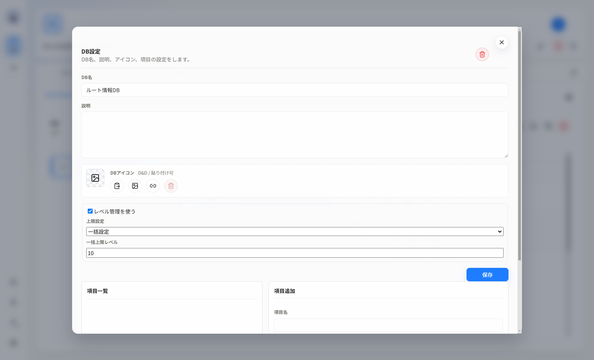
1 2 3 4| 番号 | 場所・ボタン | 説明 |
|---|---|---|
| 1 | DBアイコン | 左から、クリップボード貼り付け、画像ファイル選択、画像URL指定、解除を行います。画像は選択後に切り抜き位置を調整できます。 |
| 2 | レベル管理を使う | DB内の各レコードへ現在レベルと上限レベルを持たせます。 |
| 3 | 上限設定 | 一括設定は全レコードで同じ上限、個別設定はレコードごとに上限を設定します。一括設定時は一括上限レベルも指定します。 |
| 4 | 保存 | DB名、説明、レベル設定などの変更を保存します。DBアイコンの変更は選択時点でも反映されます。 |
チェックリストを作成・運用する
- DBへチェック対象のレコードを作成します。
- DB行の
DBメニューからチェックリストを開きます。 - 名前と必要なレベル設定を指定し、
チェックリスト作成を押します。 - 作成後は左の一覧で対象を選び、右側で進捗、レベル、表示項目、各レコードの状態を更新します。
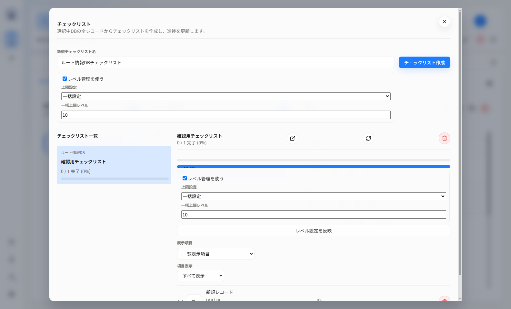
1 2 3 4 5| 番号 | 場所・ボタン | 説明 |
|---|---|---|
| 1 | チェックリスト作成 | 選択中DBの全レコードを項目にしたチェックリストを作成します。 |
| 2 | 作成時のレベル設定 | レベル管理を有効にすると、チェックだけでなく各項目のレベル進捗も管理できます。 |
| 3 | チェックリスト一覧 | 作成済みチェックリストと、完了数・進捗率を表示します。 |
| 4 | 別ウィンドウ／DB反映／削除 | 選択中チェックリストの別ウィンドウ表示、DBレコードの再反映、削除を行います。 |
| 5 | 作成後のレベル設定 | 設定を変更してレベル設定を反映を押します。個別設定では各項目の上限を個別に変更できます。 |
ゲームDBを別ウィンドウで開く
ゲームDBタブ右端の外向き矢印（上の画面の7）を押すと、選択中ゲームのDBを独立したウィンドウで開きます。メイン画面でTodoやチャートを表示しながら、ゲームDBを横に並べて参照・編集できます。別ウィンドウを閉じてもDBやレコードは削除されません。
レコード下部の補助情報
- 添付: レコードにファイルを保存します。
- 関連: 別レコードとの関係を登録します。
- 履歴: レコードの変更履歴を確認します。
- バージョン: 名前付き保存版を作成し、後から復元します。
6. ゲームDBをTodo／チャートへ紐づける
方法A: DBチェックリストをTodoへ紐づける
ゲームDBでDBとレコードを作成します。- DB行のメニューから
チェックリストを開き、名前を入力してチェックリスト作成を押します。 Todoで紐づけ先Todoを選び、詳細下部のチェックリスト欄にある＋を押します。既存を紐づけでチェックリストを選び、紐づけを押します。- 必要なら一覧を展開し、
サブTodo作成で未チェック項目または全レコードをサブTodoにします。
解除はTodoとの関連だけを外します。元DB、チェックリスト、レコードは削除しません。
方法B: DBレコードを本文へ参照チップとして挿入する
- Todo詳細メモ、チャート手順詳細、またはゲームDBレコード詳細を開きます。
- ツールバーのDBアイコン（
DB参照を挿入）を押します。 - DBとレコードを選び、必要なら全体検索で絞り込みます。
- コピー対象フィールドを選んで
挿入します。 - 本文内の参照チップを押すと、参照先の値を確認・コピーできます。
最新を参照はレコードの現在値を表示します。保存版を固定したい場合は参照バージョンを選びます。
7. ショートカット
ショートカットはグローバルです。Y'sRouteが手前にないときも、チャート実行中に操作できます。
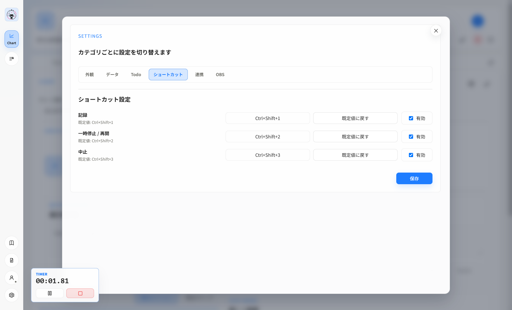
1 2 3 4| 操作 | 既定キー | 動作 |
|---|---|---|
| 記録 | Ctrl+Shift+1 | 現在手順を記録して次へ進みます。 |
| 一時停止／再開 | Ctrl+Shift+2 | 実行状態を切り替えます。 |
| 中止 | Ctrl+Shift+3 | 現在のチャート実行を中止します。 |
- 変更するキー欄を押し、新しいキー組み合わせを入力します。
- 使わない操作は
有効を外します。既定値に戻すで初期値へ戻せます。 保存を押します。同じキーの重複やOS予約キーは登録できません。
8. 設定・OBS・データ
左サイドバー下部の歯車から設定を開き、上部のタブで設定の種類を切り替えます。
| 設定タブ | 内容 |
|---|---|
| 外観 | アプリ全体のテーマを変更します。 |
| データ | バックアップ保存と復元を行います。 |
| Todo | チェックリスト完了時の自動完了と、レベル進捗表示を変更します。 |
| ショートカット | チャート実行用のグローバルキーを変更します。 |
| 連携 | 外部制御APIと、OBS Studioへ登録するTodo／Chart URLを確認します。 |
| OBS | Todo／Chartの表示内容、レイアウト、テーマ、プレビューを設定します。 |
外観タブ
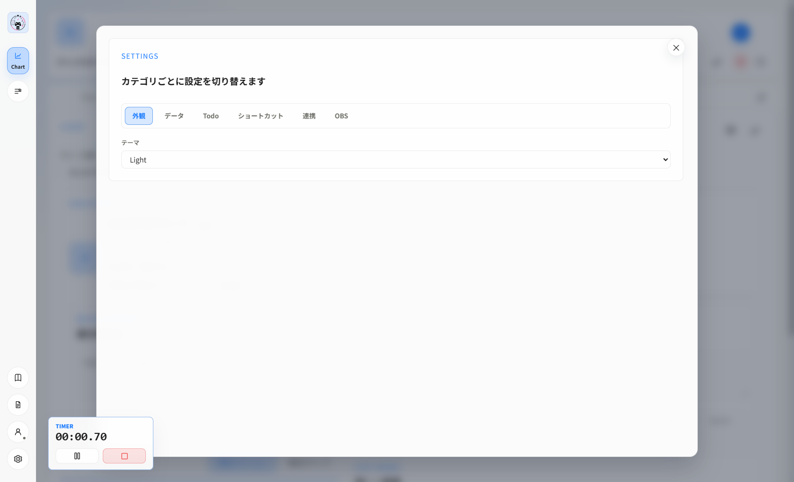
1 2| 番号 | 場所・項目 | 説明 |
|---|---|---|
| 1 | 設定タブ | 外観、データ、Todo、ショートカット、連携、OBSを切り替えます。 |
| 2 | テーマ | Light、Dark、OS設定に従うSystem、Y'sからアプリ全体の配色を選びます。選択するとすぐに反映されます。 |
データ: バックアップと復元
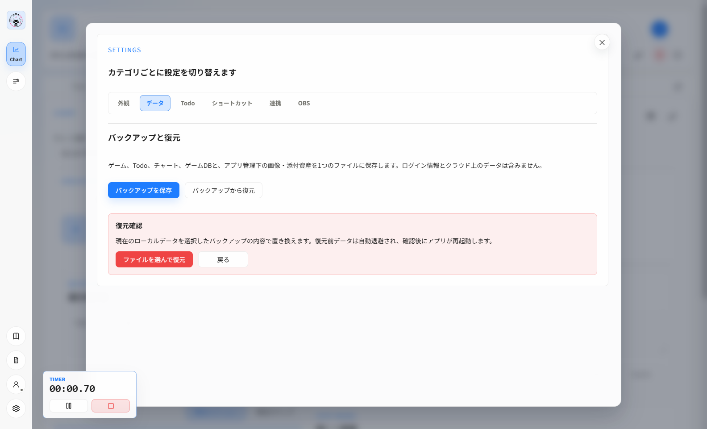
1 2 3 4| 番号 | 場所・ボタン | 説明 |
|---|---|---|
| 1 | データタブ | ローカルデータのバックアップと復元を開きます。 |
| 2 | バックアップを保存 | ゲーム、Todo、チャート、ゲームDB、画像・添付資産を.ysroute-backupへ保存します。 |
| 3 | バックアップから復元 | 復元内容と再起動に関する確認欄を表示します。 |
| 4 | ファイルを選んで復元 | バックアップを検証し、現在のローカルデータを置き換えます。 |
ログイン情報、外部制御トークン、クラウド上のアカウント・XP・進捗は含まれません。復元前データは自動退避され、復元成功後にアプリが再起動します。
Todoタブ
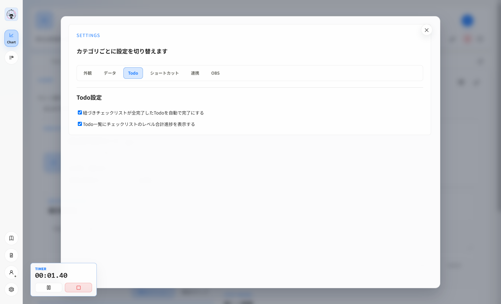
1 2 3| 番号 | 設定 | 説明 |
|---|---|---|
| 1 | Todoタブ | ゲームDBチェックリストとTodoの連動方法を設定します。 |
| 2 | 全完了時にTodoを自動完了 | Todoへ紐づけたチェックリストの全項目が完了したとき、そのTodoも自動的に完了へ変更します。手動で状態を管理したい場合は無効にします。 |
| 3 | レベル合計進捗を表示 | レベル管理を有効にしたチェックリストについて、現在レベルの合計と上限レベルの合計をTodo一覧へ表示します。 |
チェックの変更はその場で保存されます。対象Todoにチェックリストが紐づいていない場合、この設定による表示・自動完了は発生しません。
ショートカットタブ
チャート実行中の記録、一時停止・再開、中止に使うグローバルキーを変更します。各操作のキー入力、有効／無効、既定値への復元、保存方法は、画像付きの「7. ショートカット」を参照してください。Y'sRouteが手前にないときも有効なため、他のアプリと重複しにくい組み合わせを設定してください。
連携タブ
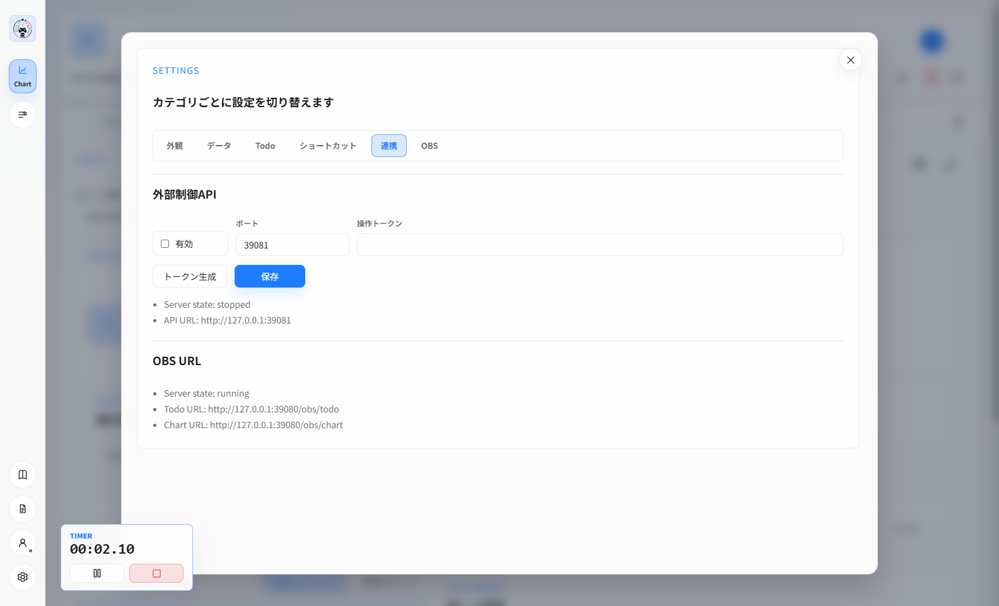
1 2 3 4 5| 番号 | 場所・項目 | 説明 |
|---|---|---|
| 1 | 連携タブ | 外部制御APIの設定とOBS用URLを表示します。 |
| 2 | 有効／ポート／操作トークン | 外部ツールからチャートを操作するローカルAPIの使用可否、待受ポート、認証用トークンを設定します。ポートは1024～65535です。 |
| 3 | トークン生成／保存 | 推測されにくいトークンを生成し、外部制御API設定を保存します。トークンはパスワードと同様に扱い、公開・共有しないでください。 |
| 4 | Server state／API URL | 外部制御APIが動作中か停止中かと、接続先のローカルURLを確認します。 |
| 5 | OBS URL | OBS Studioのブラウザソースへ登録するTodo URLとChart URLを確認します。ゲームまたはチャートを選択すると対象URLが表示されます。 |
外部制御APIは必要な場合だけ有効にしてください。操作トークンを画面共有、配信、ログなどへ映さないでください。
OBSへ表示する
設定→連携のOBS URLで、TodoまたはChartのURLをコピーします。- OBS Studioでブラウザソースを追加し、URLを貼り付けます。
- Y'sRouteで対象ゲーム／チャートを選びます。
設定→OBSで表示設定とプレビューを確認し、TodoとChartをそれぞれ保存します。
OBSページはY'sRoute起動中だけ利用できるローカルURLです。既定ポートは39080です。
Todo OBS設定
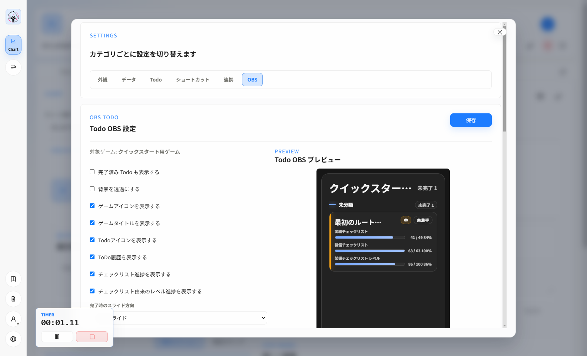
1 2 3 4| 番号 | 場所・ボタン | 説明 |
|---|---|---|
| 1 | OBSタブ | Todo／Chartの表示設定とプレビューを開きます。 |
| 2 | 保存 | 選択中ゲームのTodo OBS設定を保存します。 |
| 3 | 表示設定 | 完了済みTodo、背景透過、アイコン、タイトル、履歴、チェックリスト進捗などの表示を切り替えます。 |
| 4 | Todo OBSプレビュー | OBS Studioへ反映される見た目を保存前に確認します。 |
さらに、完了時のスライド方向、長いタイトルの表示方法、フォント／余白プリセット、フォント倍率、テーマを設定できます。
Chart OBS設定
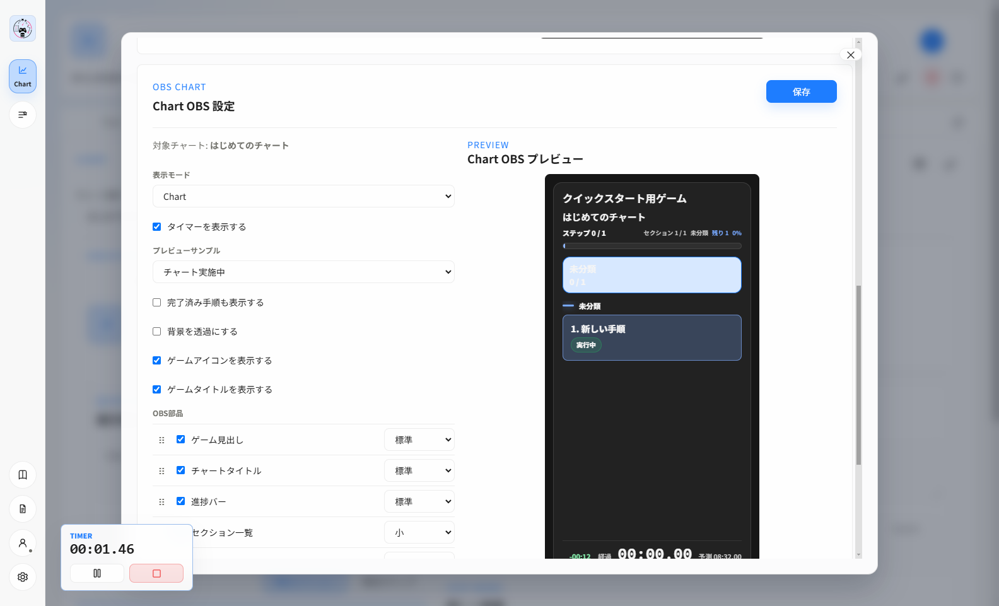
1 2 3 4 5| 番号 | 場所・ボタン | 説明 |
|---|---|---|
| 1 | 表示モード／プレビューサンプル | OBSの表示形式と、実行中・完了時などの確認状態を選びます。 |
| 2 | 基本表示設定 | タイマー、完了済み手順、背景透過、ゲームアイコン・タイトルを切り替えます。 |
| 3 | OBS部品 | ゲーム見出し、チャートタイトル、進捗バー、一覧、タイマーなどの表示・順序・大きさを設定します。 |
| 4 | Chart OBSプレビュー | 選択した部品構成とテーマの見た目を確認します。 |
| 5 | 保存 | 選択中チャートのChart OBS設定を保存します。 |
9. 更新・アンインストール
更新
- バックアップを保存してY'sRouteを終了します。
- 公式案内で新しい版、既知の問題、SHA-256を確認します。
- 新しいインストーラーを上書きインストールし、主要データを確認します。
アンインストール
Windowsの設定→アプリ→インストールされているアプリから削除します。利用者データは%LOCALAPPDATA%\Y-sRouteに残るため、完全削除時だけバックアップ不要を確認して手動削除します。